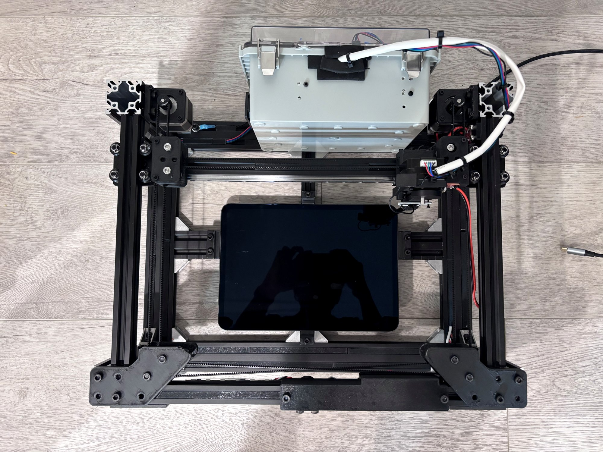
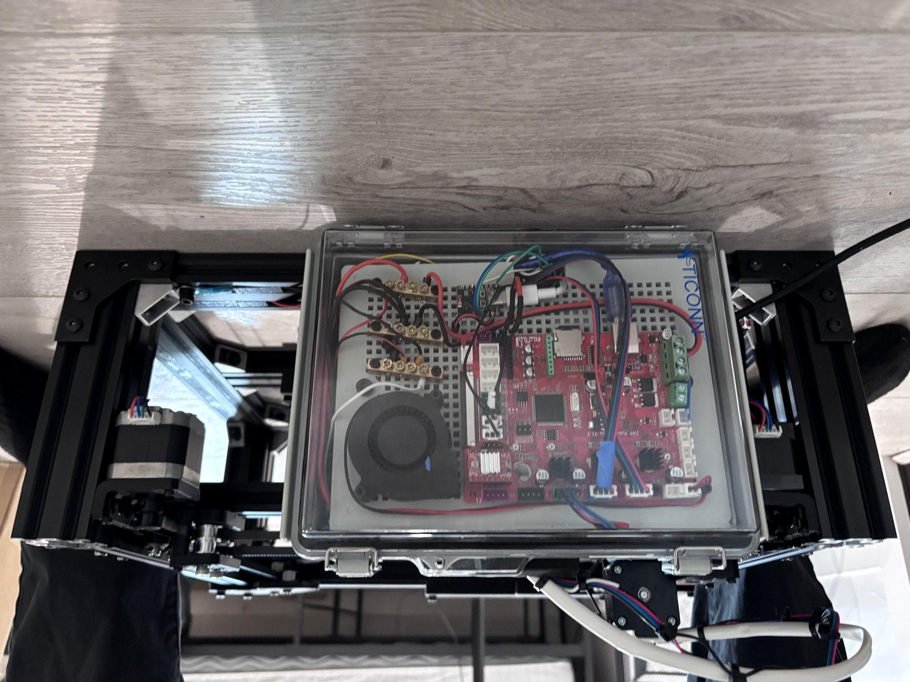
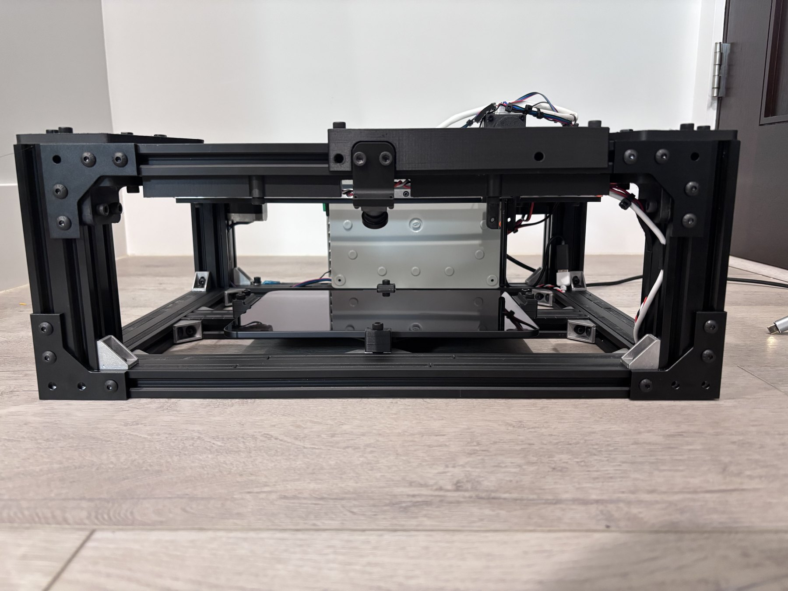
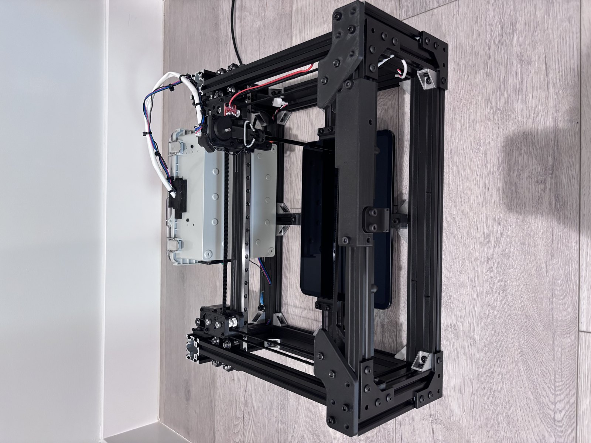

Tactus is a precision CoreXY machine that taps, swipes, drags, and holds on real touchscreen devices — driven from a Mac app where you simply draw the gestures on a live video. Real hardware. Real touches. Repeatable every time.

Software emulators can't catch what happens on real glass — capacitive quirks, momentum scrolling, touch rejection, timing. Tactus tests the actual device. A moving stylus reproduces genuine finger input while a 4K camera watches the screen, so you see exactly what the machine sees and place gestures with confidence.
You draw a sequence on the live feed, press Play, and Tactus performs it on the hardware — the same way, every time. Perfect for regression testing, endurance runs, demos, and any workflow that needs a real finger on a real screen.

Six true-to-life gestures, tuned to register perfectly on capacitive screens.
A crisp single touch for buttons, icons, and links — tuned contact time so it never reads as a long-press.
Two rapid taps in the same spot, with an adjustable gap that matches native double-tap timing.
A precise long-press for context menus and drag-handles, held for exactly as long as you set.
A true flick that leaves the surface still moving — producing real momentum and inertial scrolling.
A controlled, deliberate drag that stops before lifting — content follows the finger and halts, no momentum.
Reposition above the glass without touching — for choreographing complex multi-step sequences.
No scripting required. If you can draw on a photo, you can automate a device.
Clamp your iPad, iPhone, or tablet flat in the centered tray and set its thickness in one field.
On the live 4K video, click to place taps or drag to draw swipes. Each becomes a numbered step.
Tactus performs the sequence on the real hardware — precisely and repeatably, as many times as you like.

The Create & Play workspace — draw gestures directly on the live device video.
A clean gesture-first workspace up front, with deep controls a click away.
Dial in tap contact time, swipe and drag speeds, press depth, hover height, and precise contact trims — then Apply & Save. Tune the machine to any device or app behavior.

A dual-plane, height-compensated calibration maps the 4K camera to the machine so taps land exactly where you place them — at any device thickness.



Two quick steps to get Tactus running on your Mac.
Latest version v2.15
Download the installer, open it, and drag Tactus into your Applications folder. That's it.
⇩ Download Tactus (.dmg)macOS 11 (Big Sur) or later · Apple Silicon & Intel
Because Tactus is from an independent developer, the first time you open it macOS may show a security prompt. Right-click (or Control-click) the Tactus app → Open → Open. You only do this once.
Required · one time per Mac
The machine's mainboard uses a CH340 USB-to-serial chip. macOS doesn't include this driver, so install the free, official one from WCH (the chip maker). Universal binary — works on Apple Silicon and Intel.
⇩ Official CH34x Mac DriverTrusted source: WCH (Nanjing Qinheng Microelectronics)
Standard install: unzip the download, open the .pkg (or the .dmg on Apple Silicon), and follow the prompts. If macOS blocks it, go to System Settings → Privacy & Security and click Allow Anyway, then re-open. On macOS 11+, open CH34xVCPDriver from Launchpad and click Install. Restart if asked.
Homebrew (advanced):
brew install --cask wch-ch34x-usb-serial-driverAfter installing, the machine appears as cu.usbserial-130 in Tactus.
Everything from first setup to path programming, troubleshooting, and maintenance.
Download Tactus and start automating real-device touch testing today.
Download for Mac